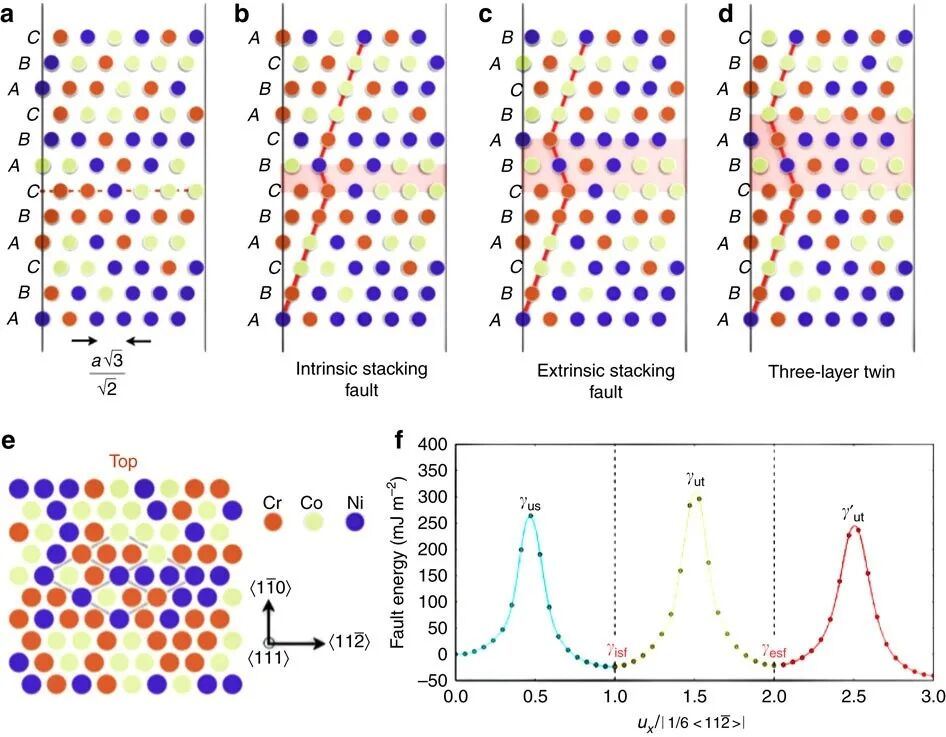
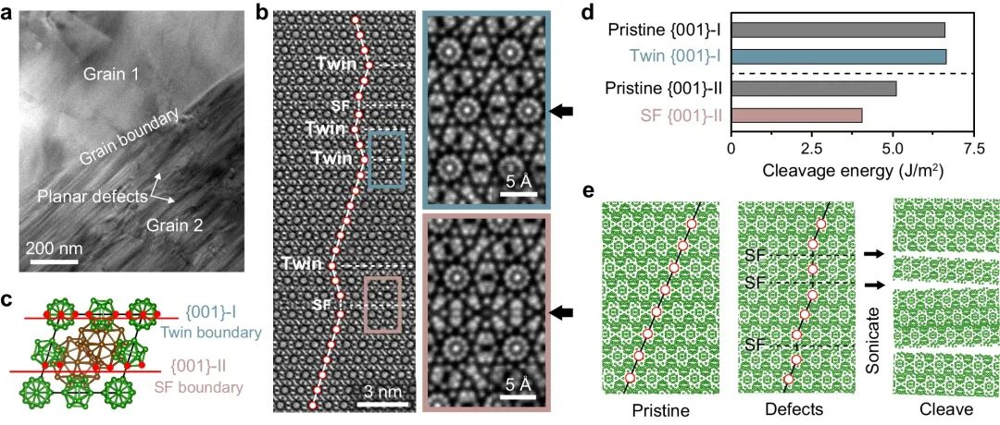
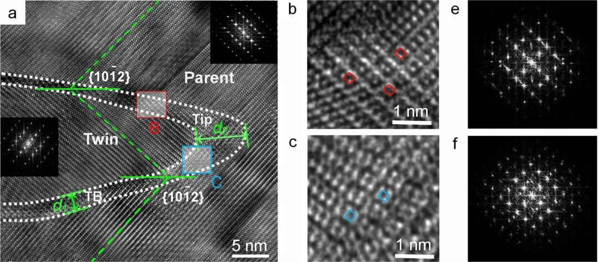
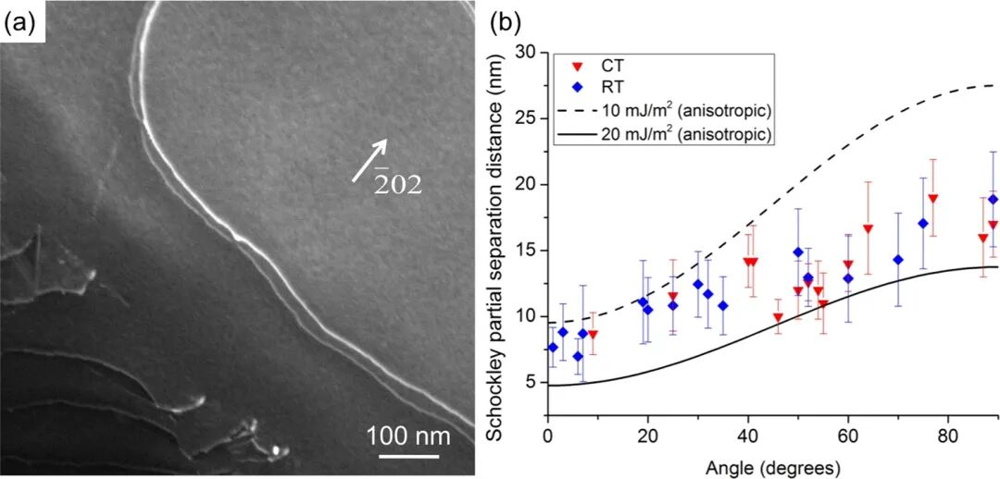
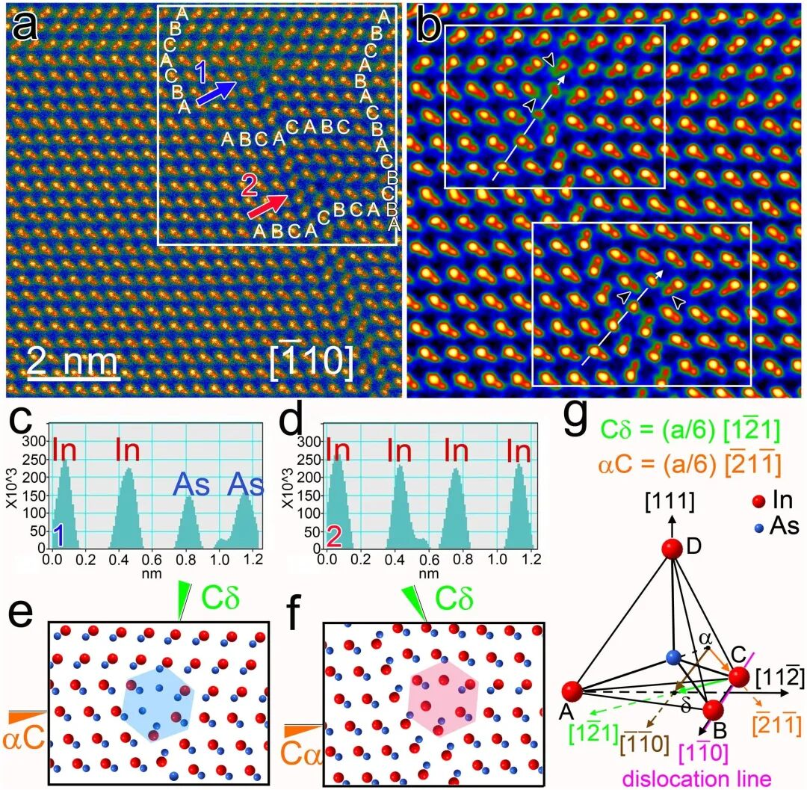
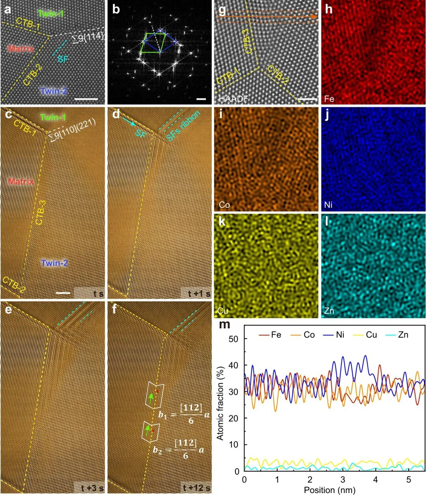
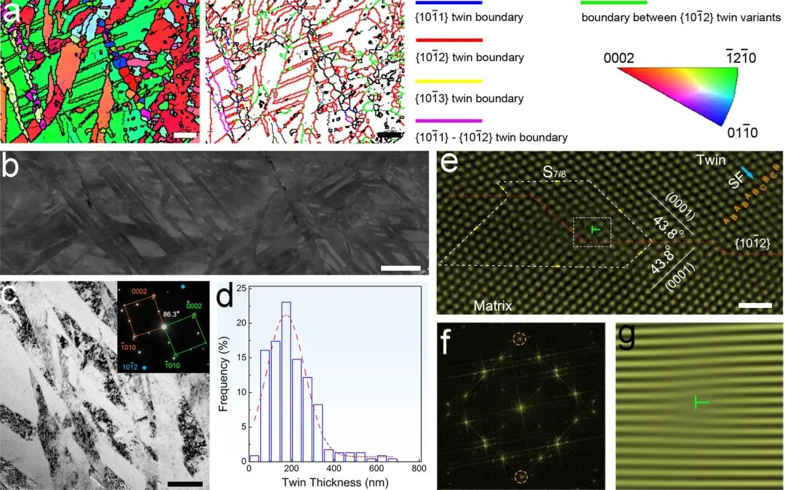
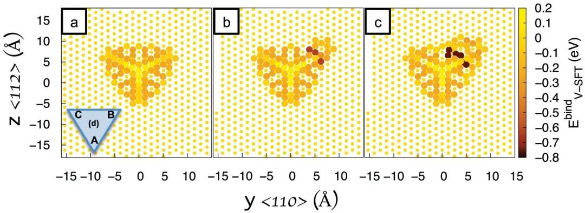

说明：本文主要介绍层错、孪晶和位错三类晶体缺陷的结构差异、形成关系、显微表征特征以及材料性能含义。
理想晶体把原子按固定平移周期排列，密排晶面在 fcc 结构中常写成 ABCABC，在 hcp 结构中常写成 ABAB。层错指堆垛顺序局部错排，例如某一段 ABCABC 变成 ABCABABC 或出现多出、少掉的一层密排面。它占据的是一片薄的平面区域，重点在于层与层的排列顺序改变，这也是层错和普通晶界差开的地方。这类归属来自晶体排列本身。

孪晶同样属于面状缺陷，它描述同一晶体中一个满足孪晶律的取向变体。孪晶区和母晶区的晶格可呈镜面对称、旋转对称或特定取向差，二者之间由孪晶界相连。孪晶的识别对象是取向关系，层错的识别对象是堆垛次序，位错的识别对象是线状错排。后续分析因此有明确结构对象。
位错属于线缺陷。晶体中多出半个原子面、螺旋错排或二者混合时，错排沿一条线延伸，并伴随长程弹性应变场。位错用伯格斯矢量描述，它可滑移、攀移、交割，也可分解为部分位错。位错的关键特征是线状核心和伯格斯矢量，这一点和层错、孪晶都不同。相应表征也应按这个对象选择。
三者的尺度和变量可先分开：层错看堆垛序列，孪晶看取向变体，位错看线状错排与位移闭合差。实际材料中它们常相邻出现，是因为部分位错滑过密排面后会留下层错，多组相邻密排面连续发生相同剪切时又可形成孪晶片层。材料性能讨论会随之改变。
在 fcc 金属或密排陶瓷中，层错常出现在 111 或等价密排面上。内禀层错相当于堆垛序列中少了一层，外禀层错相当于多插入了一层。层错区域仍属于原来的晶体，只是局部层序偏离低能排列；它通常没有形成完整的新晶粒，也没有给出一套独立取向。原子排列决定缺陷名称。
层错的边缘常由部分位错围住。若层错延伸在单一晶面上，HRTEM 中可看到原子列在某个平面附近发生相对平移；若层错闭合成四面体，三角形层错面会由 stair-rod 位错围成。层错的平面性很强，但它的起止位置往往由位错决定，形貌可从一条细线扩展到纳米尺度缺陷团簇。这种区分会影响缺陷密度统计。

同一视场内若同时出现平直界面、平行层错面和局部晶格弯折，判读顺序应从原子层序和取向关系开始。只要两侧取向没有形成固定孪晶关系，平面扰动仍优先归入层错；若两侧晶格满足孪晶律，界面才归入孪晶界。局部结构和平均信号也会分离。
孪晶区并非只有一两层原子错排，而是一段具有稳定取向的晶体区域。母晶与孪晶之间可用孪晶面、孪晶方向、取向差角和旋转轴描述；在 fcc 结构中，常见相干孪晶界对应 Σ3{111} 关系，在 hcp 镁合金中，{10-12} 拉伸孪晶会带来特定取向重排。孪晶区内部仍保持晶体周期性，这一点使孪晶区别于孤立层错。显微图、衍射和取向图各有作用范围。
孪晶界可相干，也可含台阶、disconnection 或局部畸变。相干孪晶界能量低，界面较平直；非相干孪晶界常包含一排排界面位错，能承担孪晶长大和厚化。因而孪晶既是取向变体，也是可迁移的界面结构，温度、应力和成分都会改变它的形态。参数含义才有具体物理指向。

在 hcp 材料中，孪晶界附近常出现多层原子组合和逐级取向变化，界面宽度不一定只有一个原子层。孪晶判定依靠晶体学关系，界面厚薄、局部畸变和缺陷台阶只决定孪晶界的具体结构。结构命名因此不容易漂移。
完整位错在某些晶体中会分解成两个 Shockley 部分位错。前一个部分位错先滑过密排面后，晶格只完成了部分平移，滑移面后方留下层错；后一个部分位错追上后，堆垛顺序恢复到完整平移状态。部分位错之间的距离直接对应层错宽度，低层错能材料中这个距离常增大，并改变后续变形模式。这类归属来自晶体排列本身。
弱束暗场 STEM、HRTEM 和 GPA 应变图都可描述这种关系。显微图中看到两条弧形或线状位错迹线时，二者之间可能夹着一片层错；看到单独一条线状核心时，要检查伯格斯矢量、位错线方向和对应应变场。位错负责位移不连续，层错负责堆垛序列偏离，二者的几何对象并不相同。后续分析因此有明确结构对象。

层错能高低会改变部分位错的分离距离，也会改变交滑移概率。低层错能材料中宽层错积累概率较高，随后出现孪晶或马氏体转变的概率升高；高层错能材料中，完整位错滑移通常占主导。相应表征也应按这个对象选择。
如果部分位错只在一层密排面上滑过，材料得到层错；如果相邻密排面上连续发生有序部分滑移，错排层数增加并形成稳定取向变体，材料得到孪晶。孪晶可看作多层有序剪切后的取向结构，但它已经具有自身取向关系，不能只按单层层错处理。材料性能讨论会随之改变。

部分位错、层错和孪晶界在原子尺度上会发生反应。InAs 纳米线中的层错偶极和部分位错芯，能把伯格斯矢量、位错线和错排平面对应起来；多主元合金中的多重孪晶交汇区，还会出现层错带、Frank 部分位错和局部元素起伏。同一显微区域可能同时含有三种缺陷，命名时要看研究对象究竟是线状核心、错排平面还是取向变体。原子排列决定缺陷名称。

孪晶长大时，孪晶界迁移并不总是平滑前进。界面台阶、局部失配和部分位错阵列会改变孪晶边界的运动方式。把所有线条都归为孪晶界，会掩盖位错活动；只按位错描述，又会丢失孪晶区的固定取向关系。这种区分会影响缺陷密度统计。
复杂孪晶交汇区还会产生局部应变和成分起伏，使某些层错带宽度不均匀。此时应把层错带宽度、部分位错位置和孪晶取向分别记录，三项对应不同结构量。局部结构和平均信号也会分离。
HRTEM 或 HAADF-STEM 中，层错常表现为沿特定晶面的堆垛序列突变，局部 FFT 可出现条纹错位或弱斑变化；孪晶会产生母晶和孪晶两套满足孪晶律的斑点，或在实空间形成片层状取向区；位错则在 g·b 条件下呈现线状对比，并伴随应变场。同一张显微图要同时检查层序、取向和线状核心，三类信号应按结构来源命名。显微图、衍射和取向图各有作用范围。
衍射图样中，孪晶斑点常与母晶斑点呈确定对称关系；层错容易引起弥散条纹、弱反射或局部堆垛相关信号；位错密度高时 XRD 峰宽和微应变参数会变化。衍射给出平均或投影信号，原子分辨图和暗场成像能补足局部形貌。参数含义才有具体物理指向。
EBSD 擅长区分晶粒取向和孪晶取向关系，尤其适合统计 Σ3 或 hcp 孪晶变体；它对单层层错通常不敏感，因为层错尺度可能小于步长，也未必形成独立取向区。KAM、GND 或取向梯度可提示塑性应变集中，但它们描述的是局部取向梯度，并非位错线的逐根成像。结构命名因此不容易漂移。

EBSD 和 TEM 的分工很清晰：EBSD 负责取向统计，TEM 负责局部原子排列和线缺陷成像。对于尺度较小的层错，EBSD 只能在它累积成孪晶片层或取向变体时给出响应；对于位错，KAM 高值可提示位错活动密集区，但线状核心仍要靠 TEM、暗场或 GPA 类方法确认。这类归属来自晶体排列本身。
XRD 线型分析可得到层错概率、位错密度或微应变的平均参数，但这些量受晶粒尺寸、织构和仪器展宽影响。对三者做区分时，可采用 HRTEM/FFT 查层序与孪晶斑点，暗场或 g·b 成像查位错，EBSD 查大尺度取向变体，XRD 查统计尺度的峰宽和层错概率。后续分析因此有明确结构对象。
位错是金属塑性变形的主要载体。可动位错沿滑移面推进，材料产生剪切变形；位错受晶界、孪晶界、析出相或其他位错阻碍时，屈服强度升高。位错密度、位错类型和位错运动阻力共同决定强化与加工硬化。相应表征也应按这个对象选择。
层错常改变位错分解、交滑移和孪晶形核。低层错能会扩大部分位错间距，使交滑移变难，并促进层错积累或孪晶形成；较高层错能则有利于完整位错滑移。层错四面体、辐照层错和复杂层错带还可成为强位错障碍，影响硬化、脆化和辐照稳定性。材料性能讨论会随之改变。

位错运动主要改变塑性流动路径，孪晶界常承担位错阻挡或滑移转移，层错团簇则提供局域障碍和能量储存位置。移动能力和空间形态决定它们在力学性能中的角色差异。原子排列决定缺陷名称。
在半导体、催化剂、二维材料和陶瓷中，三类缺陷对应的功能影响也不同。位错核心带来局域应变、悬挂键或非化学计量原子列；层错改变局部堆垛、相似多型和能带排列；孪晶界提供低能界面、取向选择和可能的快速扩散路径。对象不同，性能含义也不同，材料响应要按缺陷对象分别讨论。这种区分会影响缺陷密度统计。
实际分析可先写清结构对象：若讨论一条线状缺陷及伯格斯矢量，用位错；若讨论密排面的局部层序错排，用层错；若讨论母晶和取向变体之间的固定晶体学关系，用孪晶。随后再匹配显微图、衍射信号、EBSD 取向图和 XRD 线型参数，结论应对应真实晶体结构，避免停在一组形貌名称上。局部结构和平均信号也会分离。
来源：微信公众号综合整理 | 整理日期：2026-07-22